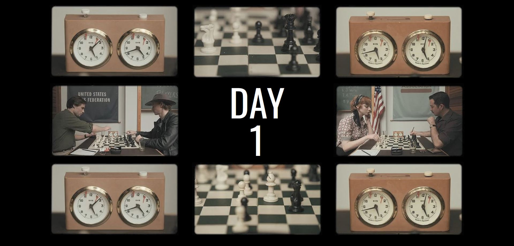

I like to play with UI Designs
It started when I was watching a movie, usually anime(animation) like Monsters University:
- Intro / Outro
- Typography
- Well edited scene
- Screen componsitions
I had a question "Can I do that with my Frontend knowledge?"
